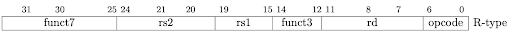

CV-X-IF Interface and Coprocessor
The CV-X-IF interface of CVA6 allows to extend its supported instruction set with external coprocessors.
Applicability of this chapter to configurations:
Configuration |
Implementation |
|---|---|
CV32A60AX |
CV-X-IF included |
CV32A60X |
CV-X-IF included |
CV64A6_MMU |
CV-X-IF included |
CV-X-IF interface specification
Description
This design specification presents global functionalities of Core-V-eXtension-Interface (XIF, CVXIF, CV-X-IF, X-interface) in the CVA6 core.
The CORE-V X-Interface is a RISC-V eXtension interface that provides a
generalized framework suitable to implement custom coprocessors and ISA
extensions for existing RISC-V processors.
--core-v-xif Readme, https://github.com/openhwgroup/core-v-xif
The specification of the CV-X-IF bus protocol can be found at [CV-X-IF].
CV-X-IF aims to:
Create interfaces to connect a coprocessor to the CVA6 to execute instructions.
Offload CVA6 illegal instructions to the coprocessor to be executed.
Get the results of offloaded instructions from the coprocessor so they are written back into the CVA6 register file.
Add standard RISC-V instructions unsupported by CVA6 or custom instructions and implement them in a coprocessor.
Kill offloaded instructions to allow speculative execution in the coprocessor. (Unsupported in CVA6 yet)
Connect the coprocessor to memory via the CVA6 Load and Store Unit. (Unsupported in CVA6 yet)
The coprocessor operates like another functional unit so it is connected to the CVA6 in the execute stage.
Only the 3 mandatory interfaces from the CV-X-IF specification (issue, commit and result ) have been implemented. Compressed interface, Memory Interface and Memory result interface are not yet implemented in the CVA6.
Supported Parameters
The following table presents CVXIF parameters supported by CVA6.
Signal |
Value |
Description |
|---|---|---|
X_NUM_RS |
int: 2 or 3 (configurable) |
Number of register file read ports that can
be used by the eXtension interface
|
X_ID_WIDTH |
int: 3 |
Identification width for the eXtension
interface
|
X_MEM_WIDTH |
n/a (feature not supported) |
Memory access width for loads/stores via the
eXtension interface
|
X_RFR_WIDTH |
int: |
Register file read access width for the
eXtension interface
|
X_RFW_WIDTH |
int: |
Register file write access width for the
eXtension interface
|
X_MISA |
logic[31:0]: 0x0000_0000 |
MISA extensions implemented on the eXtension
interface
|
CV-X-IF Enabling
CV-X-IF can be enabled or disabled via the CVA6ConfigCvxifEn parameter in the SystemVerilog source code.
Illegal instruction decoding
The CVA6 decoder module detects illegal instructions for the CVA6, prepares exception field with relevant information (exception code “ILLEGAL INSTRUCTION”, instruction value).
The exception valid flag is raised in CVA6 decoder when CV-X-IF is disabled. Otherwise it is not raised at this stage because the decision belongs to the coprocessor after the offload process.
RS3 support
The number of source registers used by the CV-X-IF coprocessor is configurable with 2 or 3 source registers.
If CV-X-IF is enabled and configured with 3 source registers, a third read port is added to the CVA6 general purpose register file.
Description of interface connections between CVA6 and Coprocessor
In CVA6 execute stage, there is a new functional unit dedicated to drive the CV-X-IF interfaces. Here is how and to what CV-X-IF interfaces are connected to the CVA6.
- Issue interface
- Request
- Operands are connected to
issue_req.rssignals - Scoreboard transaction id is connected to
issue_req.idsignal.Therefore scoreboard ids and offloaded instruction ids are linkedtogether (equal in this implementation). It allows the CVA6 to do outof order execution with the coprocessor in the same way as otherfunctional units. - Undecoded instruction is connected to
issue_req.instruction - Valid signal for CVXIF functional unit is connected to
issue_req.valid - All
issue_req.rs_validsignals are set to 1. The validity of sourceregisters is assured by the validity of valid signal sent from issue stage.
- Response
- If
issue_resp.acceptis set during a transaction (i.e. issue validand ready are set), the offloaded instruction is accepted by the coprocessorand a result transaction will happen. - If
issue_resp.acceptis not set during a transaction, the offloadedinstruction is illegal and an illegal instruction exception will beraised as soon as no result transaction are written on the writeback bus.
- Commit interface
- Valid signal of commit interface is connected to the valid signal ofissue interface.
- Id signal of commit interface is connected to issue interface id signal(i.e. scoreboard id).
- Killing of offload instruction is never set. (Unsupported feature)
- Therefore all accepted offloaded instructions are commited to theirexecution and no killing of instruction is possible in this implementation.
- Result interface
- Request
- Ready signal of result interface is always set as CVA6 is always readyto take a result from coprocessor for an accepted offloaded instruction.
- Response
- Result response is directly connected to writeback bus of the CV-X-IFfunctional unit.
- Valid signal of result interface is connected to valid signal ofwriteback bus.
- Id signal of result interface is connected to scoreboard id ofwriteback bus.
- Write enable signal of result interface is connected to a dedicated CV-X-IF WEsignal in CVA6 which signals scoreboard if a writeback should happenor not to the CVA6 register file.
exccodeandexcsignal of result interface are connected to exceptionsignals of writeback bus. Exception from coprocessor does not writethetvalfield in exception signal of writeback bus.- Three registers are added to hold illegal instruction information incase a result transaction and a non-accepted issue transaction happenin the same cycle. Result transactions will be written to the writebackbus in this case having priority over the non-accepted instruction dueto being linked to an older offloaded instruction. Once the writebackbus is free, an illegal instruction exception will be raised thanks toinformation held in these three registers.
Coprocessor recommendations for use with CVA6’s CV-X-IF
CVA6 supports all coprocessors supporting the CV-X-IF specification with the exception of :
- Coprocessor requiring the Memory interface and Memory result interface (not implemented in CVA6 yet).
All memory transaction should happen via the Issue interface, i.e. Load into CVA6 register file then initialize an issue transaction.
- Coprocessor requiring the Compressed interface (not implemented in CVA6 yet).
RISC-V Compressed extension (RVC) is already implemented in CVA6. User Space for custom compressed instruction is not big enough to have RVC and a custom compressed extension.
- Stateful coprocessors.
CVA6 will commit on the Commit interface all its issue transactions. Speculation information is only kept in the CVA6 and speculation process is only done in CVA6. The coprocessor shall be stateless otherwise it will not be able to revert its state if CVA6 kills an in-flight instruction (in case of mispredict or flush).
How to use CVA6 without CV-X-IF interface
Select a configuration with CVA6ConfigCvxifEn parameter disabled or change it for your configuration.
Never let the CV-X-IF interface unconnected with the CVA6ConfigCvxifEn parameter enabled.
How to design a coprocessor for the CV-X-IF interface
We can add a custom coprocessor that implements custom instructions by modifying the example coprocessor in this repository. This section is structured as a tutorial to implement two instructions that manipulate binary-coded decimal numbers. That is, numbers where each 4-bit nibble represents a single base-10 digit with the value 0-9. For example, 123 in decimal = 0x7B in hexadecimal = 0x123 in binary-coded decimal.
Specify your new instructions
The example coprocessor defines instructions for both the custom 0 and custom 1 major opcodes. Using a standard R-type format, each of these allows 1024 distinct instructions to be defined using the 7-bit funct7 field and the 3-bit funct3 field.

Example:
opcode=custom1, funct7=0x00, funct3=0x00: BCDfromBin rf[rd] <- BCD(rf[rs1]) Register rd is written with the binary-coded decimal equivalent of the binary integer value in rs1. Note: rs2 is not used. opcode=custom1, funct7=0x00, funct3=0x01: BCDADD rf[rd] <- ADD.BCD(rf[rs1], rf[rs2]) Register rd is written with a binary-coded decimal (BCD) sum of BCD integers in registers rs1 and rs2.
Note: The existing CVA6 example supports only register-to-register instructions with up to three source registers and a single destination register. New memory operations will need substantial modifications to the coprocessor and CVA6 system-on-chip.
Branch CVA6 repo
git branch new_coprocessor git checkout new_coprocessor
Specialise the decoder function in core/cvxif_example/include/cvxif_instr_pkg.sv
Example new lines in cvxif_instr_pkg:
At the top, specify opcodes for our new instructions:
typedef enum logic [3:0] { ILLEGAL = 4'b0000, // This one is mandatory, as we need a fall-through case that = 0. BCDfromBIN = 4'b0001, BCDADD = 4'b0010 } opcode_t;
Now define decode behavior for our two new instructions:
// 2 new RISCV instructions for our Coprocessor parameter int unsigned NbInstr = 2; parameter copro_issue_resp_t CoproInstr[NbInstr] = '{ '{ // Custom BCDfromBIN : BCDfromBIN rd, rs1 instr:32'b0000000_00000_00000_000_00000_0101011, // custom1 opcode mask: 32'b1111111_00000_00000_111_00000_1111111, resp : '{accept : 1'b1, writeback : 1'b1, // This instruction will write a register register_read : {1'b0, 1'b0, 1'b1}}, // Use rs1 for input opcode : BCDfromBIN }, '{ // Custom BCDADD : BCDADD rd, rs1, rs2 instr:32'b0000000_00000_00000_001_00000_0101011, // custom1 opcode mask: 32'b1111111_00000_00000_111_00000_1111111, resp : '{accept : 1'b1, writeback : 1'b1, // This instruction will write a register register_read : {1'b0, 1'b1, 1'b1}}, // Use rs1 and rs2 for input opcode : BCDADD } };
We should also introduce a null compressed instruction, as we have not specified one.
// No compressed instructions for our Coprocessor, but must have a NULL entry. parameter int unsigned NbCompInstr = 1; parameter copro_compressed_resp_t CoproCompInstr[NbCompInstr] = '{ // NULL Pattern '{ instr : 16'b0000_0000_0000_0000, mask : 16'b0000_0000_0000_0000, resp : '{accept : 1'b0, // Do not accept! instr : 32'b0000_0000_0000_0000_0000_0000_0000_0000} } };

Write execution logic in core/cvxif_example/cppro_alu.sv
Example new lines in cppro_alu.sv:
localparam W = X_RFR_WIDTH; function automatic logic [W-1:0] BCDfromBin (logic [W-1:0] bin); // Code adapted from https://en.wikipedia.org/wiki/Double_dabble logic [W+(W-4)/3:0] bcd = 0; // initialize with zeros bcd[W-1:0] = bin; // initialize with input vector for(int i = 0; i <= W-4; i = i+1) // iterate on structure depth for(int j = 0; j <= i/3; j = j+1) // iterate on structure width if (bcd[W-i+4*j -: 4] > 4) // if > 4 bcd[W-i+4*j -: 4] = bcd[W-i+4*j -: 4] + 4'd3; // add 3 return bcd[W-1:0]; endfunction function automatic logic [W-1:0] BCDADD (logic [W-1:0] x, logic [W-1:0] y); logic [W-1:0] sum; // full sum result logic [4:0] tmp = 0; // temporary digit result (could be up to 9+9+8=24) logic [3:0] c = 0; // carry bits for(int i = 3; i<W; i = i+4) begin // For each nibble tmp = {1'b0,x[i-:4]} + {1'b0,y[i-:4]} + {1'b0,c}; // Add the next nibble with room for overflow c = 0; for (int j = 0; j < 2; j = j+1) if (tmp >= 10) begin // Add one to carry for each "10" in temp. c += 1; tmp = tmp - 10; // Leave tmp less than 10. end sum[i-:4] = tmp[3:0] ; end return sum; endfunction
In final always_comb block of cppro_alu.sv, modify the case statement:
case (opcode_i) cvxif_instr_pkg::BCDfromBIN: begin result_n = BCDfromBin(registers_i[0]); hartid_n = hartid_i; id_n = id_i; valid_n = 1'b1; rd_n = rd_i; we_n = 1'b1; end cvxif_instr_pkg::BCDADD: begin result_n = BCDADD(registers_i[0], registers_i[1]); hartid_n = hartid_i; id_n = id_i; valid_n = 1'b1; rd_n = rd_i; we_n = 1'b1; end default: begin ...
Note: To support new memory operations, the memory interface would be needed in this coprocessor to load and store from the main pipeline. Alternatively, one could add a dedicated memory interface to the coprocessor, though care would need to be taken for memory coherence and consistency with the data cache.
Write a simple test
For example, add the following to verif/tests/custom/cv_xif/cvxif_macros.h:
#define CUS_BCDfromBin(rs1,rd) .word 0b####000000000000##rs1##000##rd##0101011 #define CUS_BCDADD(rs1,rs2,rd) .word 0b####0000000##rs2####rs1##001##rd##0101011
Copy similar test:
cp verif/tests/custom/cv_xif/cvxif_add_nop.S verif/tests/custom/cv_xif/cvxif_bcd.S
Change the body of the test:
// core of the test // Load constant values into a0 and a1 LOAD_RS(a0, 12345678); LOAD_RS(a1, 23456789); // Transform a0 and a1 into BCD form CUS_BCDfromBin(01010,01010); // a0 = 5'b01010 CUS_BCDfromBin(01011,01011); // a1 = 5'b01011 // Perform BCD add on the operands into a2 and a3 CUS_BCDADD(01010,01011,01100); CUS_BCDADD(01011,01010,01101); // (example of) final self-check test xor a2, a3, a2; beqz a2, pass;
Now build a simulation and run it
Example:
cd ~/cva6/verif/sim export DV_SIMULATORS=veri-testharness TRACE_FAST=1 python3 cva6.py --target cv64a6_imafdc_sv39 \ --iss=$DV_SIMULATORS --iss_yaml=cva6.yaml \ --asm_tests ../tests/custom/cv_xif/cvxif_bcd.S \ --linker=../tests/custom/common/test.ld \ --gcc_opts="-static -mcmodel=medany \ -fvisibility=hidden -nostdlib \ -nostartfiles -g ../tests/custom/common/syscalls.c \ ../tests/custom/common/crt.S -lgcc \ -I../tests/custom/env -I../tests/custom/common"Check verilog build errors in verif/sim/out_*/veri-testharness_sim/cvxif_bcd.cv64a6_imafdc_sv39.log.iss.
Check instruction trace of the execution in verif/sim/out_*/veri-testharness_sim/cvxif_bcd.cv64a6_imafdc_sv39.log.
View the simulated waveform output using:
gtkwave verif/sim/out_*/veri-testharness_sim/cvxif_bcd.cv64a6_imafdc_sv39.vcd
The signals in TOP.ariane_testharness.i_ariane.cvxif_req/resp should be useful.
How to program a CV-X-IF coprocessor
The team is looking for a contributor to write this section.